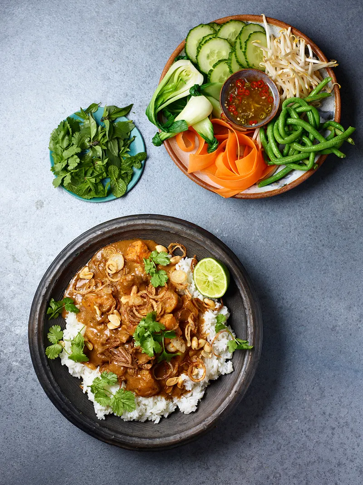

Massaman Curry

Description
“Inspired by her teenage travels to Thailand, Jodie’s rich, hearty aromatic beef curry is what weekends were made for.
The curry paste is a proper arm workout and makes far more than you need, so simply freeze whatever you don’t use for another day.
Job done!”
Ingredients
- 1 handful of unsalted peanuts , (30g)
- 500 g beef chuck
- 1 x 400 ml tin of reduced-fat coconut milk
- 1 white onion
- 1 white potato , (250g)
- 1 sweet potato , (250g)
- 1 tablespoon fish sauce , plus extra to serve
- 2 teaspoons palm sugar
- 450 g jasmine rice
- vegetable oil
Paste
- 6 sun-dried chillies
- 1 tablespoon coriander seeds
- 5 cloves
- 1 tablespoon fennel seeds
- 1 tablespoon white peppercorns
- 100 ml coconut cream
- 1 kaffir lime
- 5 cm piece of galangal
- 4 sticks of lemongrass
- 20 cloves of garlic
- 5 pieces of coriander root , or ½ a bunch of fresh coriander stalks (15g)
- 10 small shallots
- ½ tablespoon shrimp paste
Salad
- 200 g Thai string beans , (yard-long beans)
- 300 g bok choi
- 2 carrots
- 1 cucumber
- 200 g beansprouts
- ½ a bunch of fresh Thai basil , (15g)
- ½ a bunch of fresh mint , (15g)
Dressing
- 1 clove of garlic
- 2 cm piece of galangal
- 1 fresh bird's-eye chilli
- 2 limes
- 2 tablespoon fish sauce
- 2 tablespoons rice wine vinegar
- 1 teaspoon palm sugar
Method
- To make the paste, toast the chillies in a wok on a medium heat for 3 to 4 minutes. Pound in a pestle and mortar with 2 teaspoons of sea salt until fine.
- Toast the coriander seeds, cloves, fennel seeds and white peppercorns in the wok for 3 minutes on a low heat. Tip into your pestle and mortar with the chillies, add 1 tablespoon of coconut cream and pound to a paste – put some welly into it!
- Peel the lime zest, then finely chop the rind and pound with the chillies.
- Peel and finely slice the galangal, trim the lemongrass, discarding the tough outer layer, and finely chop. Peel the garlic, wash and chop the coriander roots or stalks, and peel and finely slice the shallots (setting aside a large handful of sliced shallots for later). Char your chopped ingredients in a hot wok over a high heat for 2 to 3 minutes.
- Add your charred ingredients to the paste mixture and continue to pound until smooth, adding 1-2 tablespoons more of coconut cream if needed. Alternatively, scrape the paste and charred ingredients into a liquidiser with a little extra coconut cream and pulse until smooth.
- Add the shrimp paste to the wok, fry it off for 1 minute, then bash or whiz with your curry paste until combined. (You now have enough paste for another 5 or 6 curries).
- To make the curry, toast the peanuts in a dry wok for 3 to 4 minutes or until golden, then set aside.
- Roughly chop the meat into 4cm chunks.
- Put your wok back on a medium heat and add 75ml coconut cream and 2 heaped tablespoons of the curry paste. Give it a good stir and let it bubble away for a couple of minutes.
- Tip in the beef, peanuts and coconut milk, and bring to the boil.
- Peel and roughly chop the onion, then peel the potatoes and chop into 3cm chunks. Add to the wok, along with the fish sauce and palm sugar, then give everything a good stir. Cover and continue cooking for 25 minutes, or until the sauce has thickened and the potato is soft, adding a splash of boiling water to loosen, if necessary. Have a taste and season with a little more fish sauce, if needed.
- For the salad, trim the beans and steam with the bok choi for 3 minutes or until just cooked – you want the beans to be soft enough to bend, but with a little bite. Run under cold water and then cut into three and tie into knots. Shave the carrots into long ribbons with a speed peeler, then score the length of the cucumber with a fork and slice into rounds. Arrange on a platter with the beansprouts and fresh herbs.
- For the dressing, peel and finely chop the garlic and galangal, deseed and finely chop the chilli. Finely zest 1 lime, then roll and squeeze the juice of both into a small bowl. Add the garlic, galangal, chilli, fish sauce, vinegar and sugar, and whisk to combine. Pour over the salad just before serving.
- Cook the rice according to the packet instructions.
- Heat 4 tablespoons of vegetable oil in a pan over medium-high heat and fry the reserved shallots until golden and crispy. Tip onto a plate lined with kitchen paper and leave to drain.
- Scatter the crispy shallots over the rice and serve with the curry and salad.